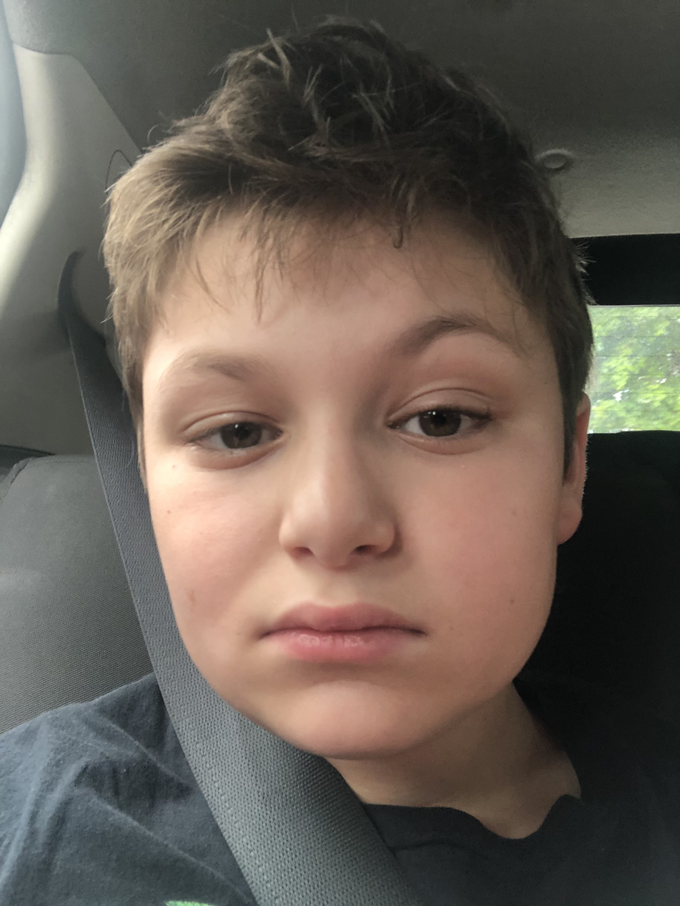

I'm a Boston-Based programmer who makes full-stack applications using the PERN stack. I can also make AI-powered apps, 3D video games, Game Art, Game Engines (or anything related), Train AI Models, and More! Besides Programming I'm a AAA/Elite hockey goalie, town lacrosse D-Pole, and starting to play basketball again this year (probably switching between SF (Small Forward) and SG (Shooting Guard).